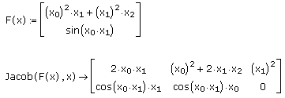
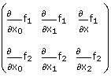
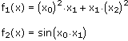
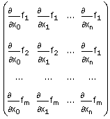
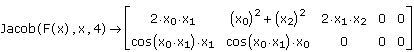
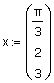
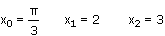
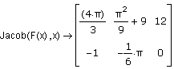

Jacobian |
Jacob(F(x), x, k)
Returns the Jacobian of the vector function F(x) with respect to the variables in the vector x.

The Jacobian is the matrix

where

are the coordinate functions in F.
Note: The preceding example, and the remarks that follow, assume that the built-in variable ORIGIN, which sets the starting index for all arrays, has its default value of 0. Changing the Value of ORIGIN describes how changing ORIGIN the affects the behavior of Jacob.
In the preceding example, the variable with the largest subscript appearing in F is x2. As a result, Mathcad assumes that there are three variables, x0, x1 and x2, and returns a Jacobian with three columns, containing the partial derivatives with respect to these variables. Note that if either x0 or x1 did not appear in F, Mathcad would still return a matrix with three columns, but the columns corresponding to variables not appearing in F would contain all zeros.
In general, if the largest subscript appearing in F is n, Mathcad assumes that there are n + 1 variables, x0, x1, ... , xn. If the vector function F contains m coordinate functions, the Jacobian has m rows and n + 1 columns, and has the following form:

In the special case in which F contains a single real-valued function, the Jacobian is the gradient of F(x). Note that Jacob(F(x), x) returns the gradient as a row vector, while the gradient operator returns the gradient as a column vector.
If you want to specify additional variables for the Jacobian, which have subscripts greater than n, the largest subscript appearing in F, you can provide a third integer argument, k, which specifies the number of variables. k must be greater than or equal to n, and the columns of the Jacobian corresponding to variables with subscripts greater than n (which do not appear in F) contain all zeros.
If you set k = 4 in the preceding example, Mathcad assumes there are five variables, x0, x1, x2, x3 and x4, where the variables x3 and x4 do not appear in F.

If you define the vector x numerically, you can evaluate Jacob with the equal sign (=). Mathcad evaluates the Jacobian at the values in x and returns a matrix of numbers, representing the Jacobian at the point x. The length of x must be greater than the largest subscript appearing in F, and Mathcad returns a Jacobian with length(x) columns. For example, if you define x by

Jacob computes the Jacobian at

The result is

If the length of x is greater than n + 1, where n is the largest subscript appearing in F, Mathcad still returns a Jacobian with length(x) columns, but the columns corresponding to subscripts greater than xn+1 contain all zeros.
| Changing the Value of ORIGIN |
If you change the value of ORIGIN to a positive integer p, then all subscripts in F must be greater than or equal to p. If n is the largest subscript appearing in F, Mathcad assumes that there are n − p + 1 variables, xp, xp+1, ..., xn. The Jacobian has n − p + 1 columns.